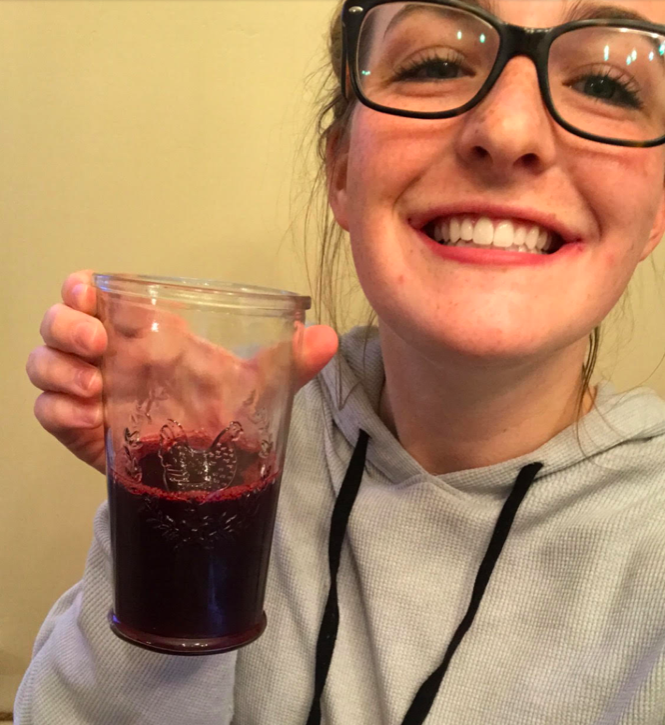

Cool Kids Kool-Aid

Ingredients
- 1 package of Black Cherry Kool-Aid
- 1/2 gallon of water
- 4 cups of ice
- 1 cup of sugar
- 1 shot of vodka per serving
Directions
- Heat up 2 cups of water until boiling
- In a large pitcher add hot water, sugar, and Kool-Aid mix
- Stir mixture until disolved
- Add 4 cups of ice to mixture to cool down the water
- Fill the remainding amount of the pitcher with water to the 1/2 gallon mark, and stir vigorusly
- Pour 1 glass of Kool-Aid mixture over ice and 1 shot of vodka
- More shots may be added for personal preference
Cool Kids Kool-Aid Black Cherry Powder
Contact me
Have any questions? E-mail Demi Meredith
The University of Montana
32 Campus Drive
Missoula, MT 59812